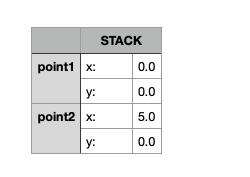
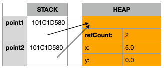

Introducción
En Swift, como en muchos otros lenguajes de programación, la gestión de la memoria es una parte esencial para
garantizar un rendimiento óptimo y prevenir problemas como fugas de memoria o accesos inválidos a la memoria.
En Swift, la gestión de la memoria se lleva a cabo principalmente en dos áreas: la pila (Stack) y el montón (Heap).
Paciencia aquí, acabarás familiarizado con estos dos términos pronto...
Listemos algunas diferencias entre Heap y Stack, montón y pila. No os molestéis en intentar memorizar nada, esta
tabla solo busca ser una referencia, un sitio al que podamos volver si tenemos dudas sobre una determinada
característica de nuestras dos nuevas mejores amigas.
Stack y Heap, cara a cara
| Característica | Stack | Heap |
|---|---|---|
| Asignación de memoria: | Estática, se realiza durante la compilación | Dinámica, tiene lugar en tiempo de ejecución |
| Acceso: | Rápido, debido a la asignación y liberación automática de memoria | Un poco más lento, implica más gestión de la memoria mediante contadores de referencias o ARC |
| Usada para almacenar: | Tipos de datos por valor: estructuras, enumerados... * | Tipos de datos por referencia: clases, actores... * |
| Seguridad: | Cada hilo tiene su propia Stack de memoria, por lo que no pueden producirse accesos simultáneos a datos "de estado compartido" que puedan producir las famosas "conditions race". ** | Todos los hilos acceden al mismo Heap por lo que pueden producirse "conditions race", así que los datos deben de estar protegidos ante esta casuística. ** |
| Rendimiento: | Rendimiento muy alto. *** | Menor rendimiento debido a diversos factores. *** |
Si queremos que nuestras abstracciones sean rápidas, y óptimas, necesitamos tener en cuenta todas y cada una de las cuestiones que acabamos de leer, más algunas otras como el despachado dinámico y estático de métodos que veremos en el siguiente artículo.
¿Hay código o no hay código?...
Vamos a verlo con código, usando los mismos ejemplos que puso Apple en la WWDC 2016, conferencia "Understanding Swift Performance".
struct Point {
var x, y: Double
}
let point1 = Point(x: 0, y: 1)
var point2 = point1
point2.x = 5

Este sencillo ejemplo no haría uso del Heap, ambas estructuras serían almacenadas en la Stack de memoria correspondiente. Hemos agregado una representación de cómo quedaría dicho Stack. Para ello, y por tratarse solo de una representación, sin más ambición que el de aportar una ayuda visual a la explicación, hemos usado la típica hoja de cálculo a la que todos estamos acostumbrados. ¿Cómo sería su comportamiento en memoria si usásemos una clase?, veámoslo con un ejemplo:
class CPoint {
var x, y: Double
init(x: Double, y: Double) {
self.x = x
self.y = y
}
}
let cpoint1 = CPoint(x: 0, y: 0)
let cpoint2 = cpoint1
cpoint2.x = 5

Cómo podemos apreciar en la representación de memoria, para este ejemplo, Swift tiene que hacer uso del Heap para almacenar los datos del objeto cpoint1, con todos los costes de rendimiento, seguridad, etc, que hemos visto en el bloque anterior. Además podemos observar que Swift sigue teniendo que hacer uso de la Stack correspondiente para almacenar las referencias a 101C1D580, que es un referencia de memoria de ejemplo, para simular una real donde se almacenarían los datos. Muchos, al llegar hasta aquí, os preguntaréis por qué hay cuatro "espacios" de memoria si solo necesitamos almacenar el valor de las propiedades "x" e "y". Lo veremos en más detalle más adelante, pero, en resumen, uno de los "espacios" lo usa ARC para almacenar el número de "referencias activas" que apuntan a dicha posición de memoria y el otro se usa para almacenar el tipo de objeto. Esto último lo veremos en más profundidad en el siguiente artículo pues es importante, debido a la Herencia.
Structs ineficientes y alternativas a éstos
Revisemos la siguiente implementación para aprender, con un ejemplo de Apple, de algunas trampas en las que podemos caer al implementar nuestras funcionalidades, abstracciones, etc:
enum Color { case blue, green, gray }
enum Orientation { case left, right }
enum Tail { case none, tail, buble }
var cache [String: UIImage]()
func makeBalloon(_ color: Color, orientation: Orientation, tail: Tail) -> UIImage {
let key = "\(color):\(orientation):\(tail)"
if let image = cache[key] { return image }
// Aquí iría el resto de implementación para devolver el UIImage correspondiente,
// no nos vale para el ejemplo así que la obvio.
}
La función se ocupa de crear los típicos "globitos" que se usan en viñetas, comics, etc, para mostrar una conversación con un lazo-flecha apuntando hacia la persona que está hablando. Como tanto el color, como la orientación y el tipo de lazo son finitos y pueden parametrizarse, contabilizarse, etc, nuestro desarrollador ha usado enums para establecer estos parámetros de forma muy acertada. También ha creado un array para almacenar diccionarios y en base a una key de tipo String poder devolver su UIImage correspondiente si esta ya ha sido procesada y así no tener que volver a procesar un "globito" si ya ha sido procesado anteriormente.
Por desgracia no ha tenido en cuenta que dichos Strings harán uso del Heap e incurrirán en conteo de referencias, necesidad de protección
de la información, acceso más lento, etc.
Y aquí es dónde podríamos estar pensando: "¿Pero el String en Swift no se implementa mediante una estructura?, ¿Las estructuras no tenían
paso por valor?, ¿no nos has contado que las estructuras usan el Stack?"